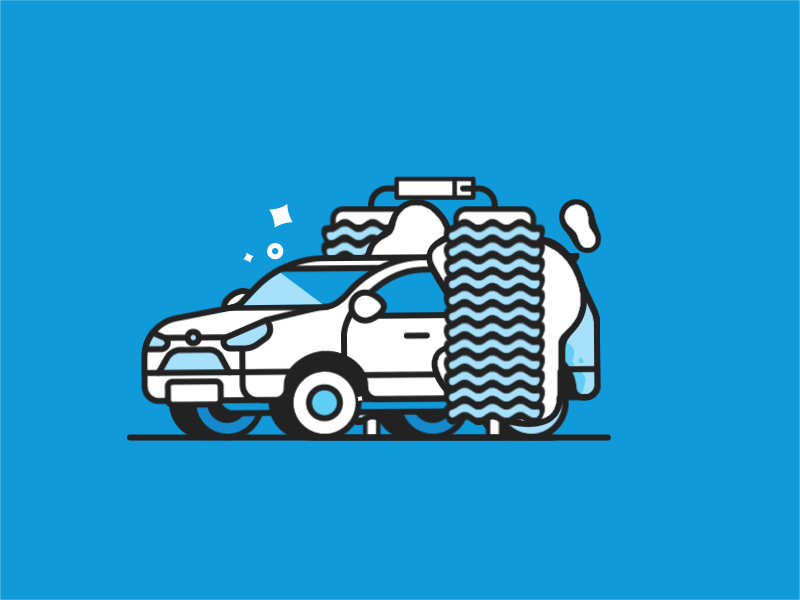

I work at the carwash while Im waitng for my SPM result. To be more prepared in future, i choose to work because i want to gain useful experience. I work at the carwash for 2 month. During that time, i gain a lot of experience which i can learn on how to be discipline in doing a job, improve my communication with customer and teach me how hard to get a money. Besides, it can support my financial instead i just ask to my parents if I want to buy something. I dont want to burden them. The best thing is when i receive my first salary and Im very happy. My salary amount RM 600 and for me at that time, it a lot. Almost 2 month, I decide to continue my studies at UiTM Kedah. I feel very sad because at that carwash, I make many friends and lot of experience but at the same time, Im very happy because I can continue study and move to the new journey.
"Opportunities don’t happen. You create them". – Chris Grosser
During semester 3 break. All part 3 students in Library Mangement have to do practical for subject IML290.Students required to do a intern at library. I choose UiTM Perlis Library which is Dato' Jaafar Hassan Library. I choose that library because it is near to my house. We have to do a practical for 6 week. During my intern, I was well received by the library staff. I am very happy to be able to be in the organization even temporarily. I felt like I was going to work at that library but I was just an intern student. I gained a lot of experience while there, such as being involved in events, improving my communication with user and becoming more disciplined. for me, interns are a preparation for me to work in the future.